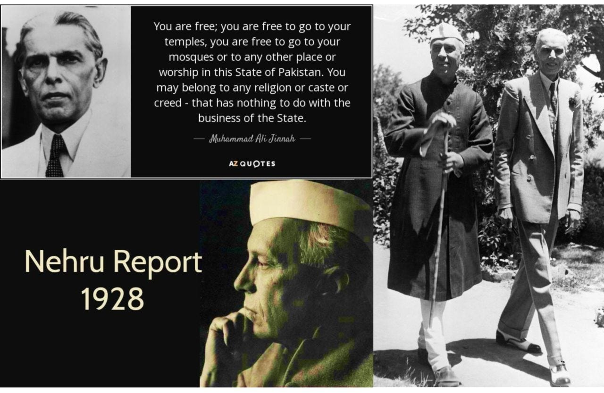
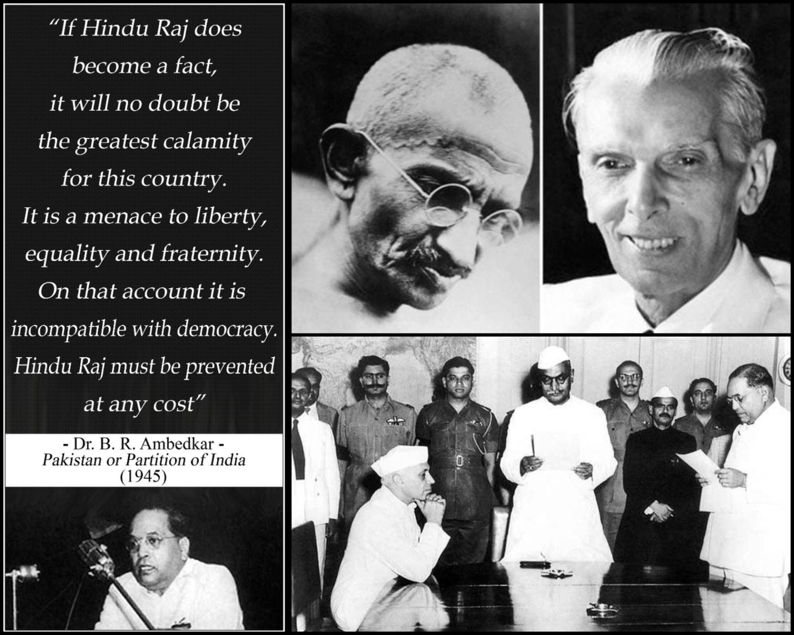
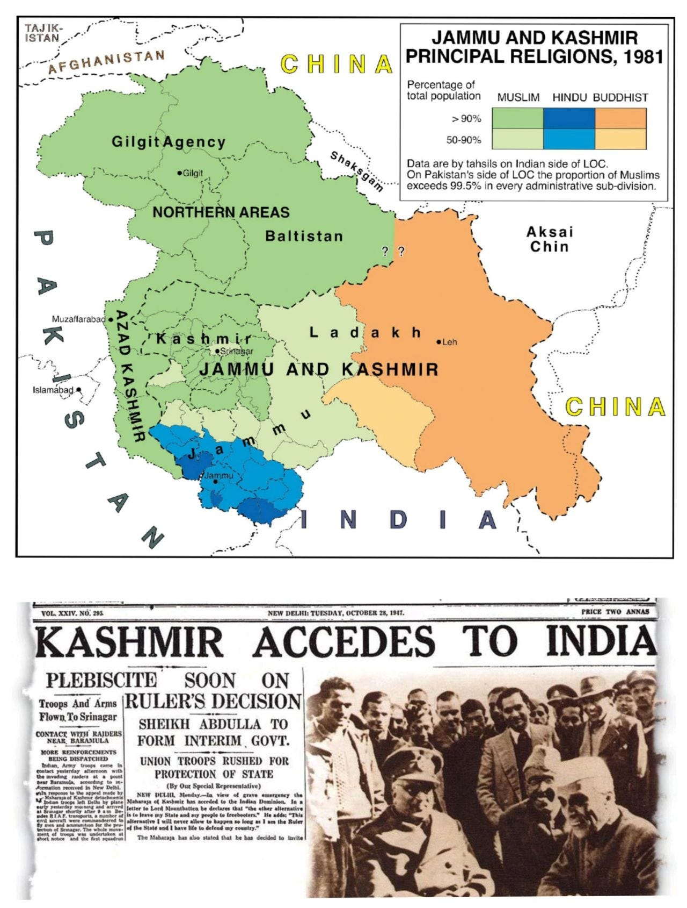

2. Creation of India and Partition of 1947
Nehru Report

Before 1916, Hindus and Muslims didn't even have a shared political agreement on how to live together in one country.
What happened in 1916?
Jinnah (yes, that Jinnah) brought both sides together. Lucknow Pact happened. That was the first time Hindus and Muslims formally sat down and said, "Okay, let's figure this out."
Before that? Separate tracks. Separate electorates. No shared vision.
The real game-changer - 1928
Now here's the part no one talks about.
NEHRU REPORT
For the first time ever, Indians sat down and wrote - Freedom of speech, Freedom of religion, Equality before law, One person, one vote (mostly), No discrimination by caste, religion, or gender
This was the first time "India" meant something inclusive.
Not 1947. Not 1950.
1928.
The India we actually live in – the secular, constitutional one – came from Gandhi, Nehru, and that 1928 report.
IMPORTANT COMMENTARY:-
- Saraleepa - Toh phir Mughal period mein kya kar rahe thain? How was they living that time? And why Aurangazeb insisted to convert all Hindus to Muslims? And where from christianity came in India? And who and where from the concept of modern society came?
- Sajal - Who said Aurangzeb converted all Hindus to Muslims? 😂 In fact, Aurangzeb himself appointed many Hindus in his royal court. And Marathas used to work alongside Mughals before coining the concept of Swaraj. Christianity (and Islam too) took hold in India primarily because of Hindu caste system. Concept of modern society initially started during Age of enlightenment in Europe. But many cultures still influenced each other.
- Saraleepa - hmmm .. toh basically indian caste system which was actually a advance societal structure of work distribution initially became the opportunity for invaders to again n again invade India and take away its wealth? And if Aurangazeb didn't do that, then during 1971 War where from the concept arise that if a Pakistani Muslim soldier rapes a Hindu girl and women then the next generation will be a inborn muslim, which led to forced conversion of so many Bengalis in Bangladesh into Muslims?
- Sajal - Who said Indian caste system was an advanced societal structure of work distribution? 😂 Caste hierarchy was built by Indo-Aryans to rule over native population. This paved the way to land feudalism and eventually temple feudalism too. (Though this is too oversimplified and everything evolved over a period of time but you can get a rough idea) Regarding 1971 War, things got messed up badly in last few centuries. During Mughal rule, conversions occurred mostly among lower castes to find relief from upper caste persecution. (and also some other benefits like freedom from Jaziya tax or attraction towards Islam). Gradually, this hardened into communal identities and powerful men started to exploit people.
- Saraleepa - So how did this particular word "caste" come? And then basically, the lower caste people became the reason for the expansion of islam in society since they can't tolerate the oppression and wanted relief from oppression of Hindu rulers n zamindars but ultimately got equally trapped under muslim rulers??? And also why this Muslims leaders/European Christian needed to invade India again n again and not western countries? And why didn't the European Christians or American christian doesn't get converted to Islam for better tax relief and all?
- Yash - Great comprehension
- Rakesh - Lovely share Sajal Garg !! so true - there was NO INDIA or BHARAT before. This new Hindu funda of "akhand Bharat" is such a fake narrative, a farce & pipe dream being sold to us today....beware...
- Viveck - its so heartening to go through this conversation. Please keep this flowing.
- Abhishek - Imagine jinnah like PM in india in 1947. Fortunately indians of that time haven't opportunity to see but we have now 😎
- Syed - And yet we lived in peace harmony misery brotherhood whatever life threw at us. Post these geniuses we have 4 countries divided with 2 neuclear. So much for agreements sitting down and writing.
- Sajal - 4 countries? Kashmir included? 😂
- Syed - nope. India Bangladesh and Pakistan of course and parts of Afghanistan and Nepal were Bharat. Please look at 15th, 16th & 17th century maps or even what British controlled as the Indian colony. We were a much much bigger country more diverse and unified in our own way. and by the way Kashmir was given the leeway of behaving like a different country by the stalwarts of independent India much before the terrorist neighbours started claiming it b
- Sajal - No, and that's the point I'm raising. Concept of a unified territory as a NATION was not proposed before this NEHRU REPORT. So it would be absurd to say that 'this' territory belonged to India. There was no India before 1928.
- Shubhankar - In 1905, Lord Curzon divided Bengal on the basis of religion. That divided was undone in 1911, but in 1947, that part became East Pakistan, and in 1971, became Bangladesh. Fact: Jinnah never did anything against the British. He never went to Jail. His contribution to Indian freedom struggle can be considered when he used to be the defense lawyer for freedom fighters. And yes, Sajal Garg Don't make outlandish statements that Jinnah was the one who brought Hindus and Muslims together first time. Read about 1857, the first recognized mutiny. Check that Hindus and Muslins participated in that mutiny against the British. Jinnah was lawyer for Lokmanya Tilak many times. You can check that.
- Sajal - Good point! Lucknow Pact was the first major formal political agreement between them. Otherwise by your logic, Hindu and Muslim rulers often cooperated to defeat common enemy.
- Shubhankar - Just to add for your understanding: When Congress was first established in India, it had Hindu as well as Muslim Leaders alongside others. Jinnah was a minor not even an adult then. Why I gave you the context of Partition of Bengal? Read why Muslim League was formed and why it was related to it? There were two major classes under which multiple ideologies existed: 1. Secular groups where religion was not important eg HSRA (Bhagat Singh was a Sikh, Azad was a Hindu, Ashfaq was a Muslim...and so on) 2. Communal Groups where a particular community and its interests were prioritized. (Hindus, Muslims, Dalits and so on) Direct role in freedom struggle is primary credited to those who kept nation first (not religion). Those who prioritized religion went to Pakistan. Rest stayed with India.
- Sandeep - Then came 1935 when hindu fractional group came with an idea of 2 nation theory. First time in Ahmedabad it was spoken in a Hindu Mahasabha event. They instigate the idea of 2 nation theory.
Partition (1947)

In 1937, Congress swept the elections. Huge victory.
By 1946, most Muslims voted for Pakistan.
What went wrong?
Two things. The Poona Pact (1932) and then Congress's own rule (1937-39).
Let me explain.
First, the Poona Pact (1932)
British said "separate electorates for Dalits and Muslims." Ambedkar wanted it. Gandhi said no.
Ambedkar had to give in. Signed the Poona Pact. Joint electorates with reservations instead of separate ones.
Was it necessary? Maybe. Separate electorates led to Pakistan later. So Gandhi wasn't completely wrong.
But here's the cost - Caste inequality became INVISIBLE. We pretended joint electorates fixed everything. It didn't. We're still paying for that today.
Now, 1937. Congress forms governments.
This is where things get ugly.
Congress won. Muslim League lost badly. Jinnah was irrelevant at this point.
Congress said, "We don't need you." And formed ministries without Muslim League.
Big mistake.
What Congress did (1937-39):
· Promoted Hindi, pushed Urdu out of courts and schools
· Made Vande Mataram compulsory in schools
· Glorified Hindu ancient history, downplayed Muslim rulers
· Banned cow slaughter in some places
· Interfered with Muslim religious trusts (waqf)
· Favored Hindus in government jobs
The result:
· 1940: Lahore Resolution. Jinnah asks for separate Muslim states.
· 1946 elections: Muslim League wins 425 out of 492 Muslim seats.
· 1947: Partition.
IMPORTANT COMMENTARY:-
- Prathmesh - Putting the blame of partition on Hindus. Even then... partition of India was absolutely right decision. Selectively quoting lines from 'Pakistan or Partition of India book'. If you want, I can quote 'n' number of lines from the same book... explaining Hindus and Muslims as two distinct nations ( and rightly so ).
- Yash - it's more about shifting blame of partition to people instead of individual leaders like Gandhi Jinnah Savarkar.. to debunk the simplistic mainstream narrative that normal people were innocent.
- Prathmesh - that's what I am saying.... Ambedkar too reiterated: Hindus are Muslims are two distinct nations. Few individuals don't make up their population, millions of people do.
- Yash - Dr Ambedkar said Coexistence among different communities is possible, as seen in countries like Canada and South Africa. The real issue is not simply ‘Hindu vs Muslim,’ but which identity people prioritise—religion, language, or ethnicity. People prioritise communal identity so partition become inevitable otherwise it's not something mandatory.
- Prathmesh - normative vs pragmatic AMBEDKAR's philosophy is pragmatism
- Yash - I agree. 100%. Partition was a right decision according to the situation of 1946.
- Arun - "By 1946, most Muslims voted for Pakistan." BTW, this was very restrictive voting - not the one person one vote. So "most Muslims" is likely inaccurate. "Promoted Hindi, pushed Urdu out of courts and schools · Made Vande Mataram compulsory in schools · Glorified Hindu ancient history, downplayed Muslim rulers · Banned cow slaughter in some places · Interfered with Muslim religious trusts (waqf) · Favored Hindus in government jobs" The period of Congress ministries (1937–1939) in Indian provinces is characterized by intense historical debate, with the Muslim League alleging a "reign of tyranny" and the Congress maintaining its secular, nationalist focus. These claims are based on the accusations mentioned were largely voiced by the Muslim League through reports like the Pirpur Report (1938). The Congress argued that these initiatives were part of a secular national building process.
- Yash - Hindu's did andhbhakti and it's a FACT. Congress and Hindu Mahasabha united (correction: not in organisation sense) and did oppression of muslims. This is problem of upper caste Hindu of urban India.
- Arun - I thought Hindu Mahasabha colluded with the Brits as two sides of the same coin (2 nation theory). Sure there may have been some support for Hindu Mahasabha in the Congress too at many individual leader levels but I seriously doubt it rose to the level of unity in an organizational sense.
- Raja - Jinnah was upset with Gandhiji, Nehruji and Netaji because the majority of the Muslims didn't support him - they supported the INC. This was the same with Hindus. Only the Parsis community was the one where their majority, perhaps, didn't support the INC. Both the Muslims and the Hindus were for a united India. It was the ML & RSS/HMS that said that there has to be 2 nations. Where did you get this shit from ? Totally fake
- Arun - This is what I would think makes most logical sense too. "Only the Parsis community was the one where their majority, perhaps, didn't support the INC. " - curious - why?
- Yash - Dr Ishtiaq Ahmed on Jinnah, he is a Pakistani Swedish scholar University at Stockholm. Andhbhakti was done by UP Bihar Upper caste Hindu and it lead to the demand of Pakistan. "Congress and Hindu Mahasabha people united not in organisation sense but at personal level" that is the mistake I can say. Apart from that your statement is 💯 correct. To switch between local and broader context we need Historiography understanding. I agree, no unity at organisation level. It's the people who united at various personal capacities and did the oppression.
- Raja - Who the fcuk cares who said what ? Just because some idiot said something, you don't have to support him.. There is only one truth. And that's what matters. On the other hand, the founders of the RSS were in INC at one point. They left to start the RSS because they didn't agree with its principles & ideology And then very briefly (till the Poorna Swaraj declaration) the RSS unwillingly stood together with the INC. Because the Parsis were foreigners who was living in our land and aligned with their British hosts. Their wealth & success were totally attributed to their relationship with the British.
- Yash - Dr Ishtiaq Ahmed is a Historian and I know he follows the right methodology and his narrative is not very binary. I am not talking about de-legimitising the Congress struggle because entire freedom struggle was done by Congress. I am trying to say that we must not de-legitimise muslims experiences of inequality and oppression and Muslim League and RSS had ZERO vision for future of India the way Congress had. RSS and Muslim League had almost no contribution in Unity of India after 1928 Nehru Report
- Raja - every lie & fake narrative is build on a small specks of truth. Just because he is a Muslim, he doesn't have to be an honest historian.
- Yash - yes but hiding these small specks of truth isn't the solution if they lead to such a major incidents like partition. He is telling the side of story which we don't want to hear as Indian but this is absolutely necessary if we want to make peace with Pakistani and if we want to explain people that NEGLECTING the needs of a community for long time can become very dangerous, it can lead to partition also.
- Nimi - I agree with this….Partition was a political and historical outcome of multiple failures. But its memory still lives in our social mindset and that’s what continues to shape how we see it today. and one thing I’d like to add “C. Rajagopalachari Formula (1944)”— shows that … compromise was actually attempted but by then… trust deficit had already gone too deep between them.
- Sajal - Or perhaps trust was never there. No one knows. But the skepticism of Mr. Jinnah proved real. 🥀Thank you for quoting C. Rajagolpalachari. Reading more and more accounts which are buried down.. provides more insights.
- Nimi - True, history is much more layered when you look beyond the mainstream narrative and yes every layer open up a deeper angle of thinking.
- Raja - From the research I have some, some of the statements do not line up with the facts. The Muslim League & the Hindu Mahasabha were in cohorts with each other. The British was so pissed with Gandhiji, Pundit Nehru & the INC, that they didn't want to leave a united India. ML & HMS were a welcome partner for this. ML & HMS/RSS were openly against INC and they left the Movement after the Lahore Congress of 1929. INC at that time may not have been great, but the Provincial Governments had very little power. INC left the Govt basically due to this - they found that there was no future for dominion home rule. ML & RSS wanted power at any cost. A lot of history has been rewritten showing the freedom movement, the INC and the leaders who fought for our freedom in poor light. And a lot of this has been pushed by the hard right wing propaganda machines..
- Yash - People at local level didn't had much unity before Jinnah Lucknow Pact 1916. Gandhiji weren't able to unite Hindu Muslim till 1937 but the unity had a cost which is invisibilisation of INEQUALITY and Hindu Muslim at local level in UP Bihar and other parts of North India weren't at the great terms . Demand of Pakistan begun at UP Bihar and North India as a separate state not country but in 1946 Jinnah forcefully did the partition. Lots of things when we see at broader lens we miss the fragility exist at the local level. Dr Ishtiaq Ahmed, Historian on Jinnah did really great job, he called Jinnah a psychopath so it's not like he was worshipping him .. we need various methods to see the context of history. That's what entire concept of Historiography is all about.
- Raja - Your are right about he unity part. It's like saying that just because a peacock dances when it rains, it's raining because of the peacock. Jinnah had nothing to do with bringing unity. That was totally Gandhiji, Pundit Nehru, Patelji, Netaji and other Congress leaders across the country. Jinnah, and the RSS only tried to divide the people because they wanted to defeat the Freedom Fighters and the National Movement and capture power when the British leave the Indian subcontinent. Please get your whole facts together
- Yash - Yes, Jinnah only UNITED Hindu Muslims in 1916, but after the 1928 Nehru Report, the entire struggle for UNITY was done by Gandhiji, Pundit Nehru, Patelji, Netaji, and other Congress leaders, and there was ZERO contribution from Jinnah (Muslim League) and Savarkar (RSS). But that UNITY had a COST. The COST was the rise in socio-economic INEQUALITY and OPPRESSION of Muslims at the local level across North India and that was very much sufficient for Jinnah to take advantage of the whole situation but people don't like being oppressed is another FACT which we can't ignore. This de-legitimise their everyday experience of oppression. It's equivalent of saying there is no Muslim oppression under MODI GOVT.
- Raja - Jinnah didn't unite all muslims, just like the RSS or HMS didn't unite all Hindus. Only a section of the community. They were successful with the partition because of their proximity with their British masters. Let's not abuse the freedom fighters and the Congress with silly fake narratives
- Yash - I agree 💯 they didn't unite Hindu (HMS) Muslim (ML), but this is not a fake narrative, this is one of the way to see things what happened at local level which lead to partition. Nobody is denying the contribution of Congress and freedom fighters but if we want to explain why partition happened then these things cannot be neglected, these are the central issues. When we optimise the UNITY then we compromised the EQUALITY ..
- Yash - This feels like déjà vu. (except BullDozer + GharWapasi) #Andhbhakti is not a new thing, I mean even the format hasn't changed, it was just suppressed for few decades and it has nothing to do with political parties, this is actually a social issue which we generally avoid to confront.
- Sajal - Agreed! No sane person can deny the existence of Majoritarianism. The medium have changed. The forms have changed. But mentality remains the same. And why would they confront? Confronting means losing power over weak. That is how everything works for them.
- Habeeb - You need to explain the crux - i.e. the process of these elections - not everybody was allowed to vote - it was based on property ownership & income, leading to only 10% of the population being allowed to vote.
- Yash - same is true for Hindu's also .. so upper caste Hindu / Muslim took decision on behalf of others ..
- Habeeb - Yes - if you notice I didn't mention any community in my comment as it was across the board
- Nekmandeep - The Poona Pact was indeed complicated... Dr. Ambedkar wanted the separate electorates, which could result in other problems... But without separate electorates, we saw a partition... And till date, that decision confuses me...
- Sajal - There was still one another chance when Cabinet Mission plan was introduced in 1946. This is introduced by the British to avoid the partition and let the power remain decentralised. But refusal of Congress leaders made the partition inevitable. Though, decentralisation has their own demerits..
- Rakesh - Totally agree Sajal Garg. But sadly - the majority of us are blind to this obvious truth....
- Dilshad - History that is dissapeard from main stream media thanks for bringing it out to understand real crux and many layers behind partition
Fear-based Political Analysis

Indians are terrified of 15% Muslims.
But here's the math:
· Muslims are 15% today
· Will peak at 19% by 2050
· Then decline
At current rates? It would take 600 years for Muslims to match Hindu population.
Meanwhile, Pakistan's Hindus fell from 15% (1941) to 1.2% (1951). Survived. Wasn't wiped out.
So what are we really afraid of?
Hiding this data is the root cause of all communal hatred in India.
IMP 🚨 - The Jammu massacre (October-November 1947)
Before Kashmir even joined India (Oct 26), this happened:
· 20,000 to 100,000 Muslims killed in Jammu
· Mirpur massacre (Nov 25): another 20,000 dead
Who did it? Raja Hari Singh + RSS + Akali Dal.
Why? To change demography. Jammu went from 65% Muslim to 29% Muslim.
India hides this. Protects RSS and Akali Dal. Then blames Pakistan for everything.
Therefore - "We're no different than Pakistan."
Conclusion -
We're fed fake fears (Muslims will take over) so we don't ask real questions (who actually committed massacres?).
Not knowing correct data about Pakistani Hindus and Indian Muslims = root cause of communal hatred.
Two things can be true -
Pakistan treats Hindus badly. And India covered up a massacre in Jammu.
One doesn't cancel the other.
In essence -
We pay the price for 1947 cover-ups. Still paying today.
IMPORTANT COMMENTARY:-
- Nadeem - No, Indians are not terrified of 15% Muslims. The bogey has been raised and sustained for the votebank zombies only. At national level it is directed against Muslims and Dalits. And at Christians, Sikhs and the North-eastern people by specific states. It's a shame since it is dividing the citizens and holding back the nation in reaching its full potential.
- Sajal - Agreed. And it's because people are not aware of the diversity. The restrict mobility and low interaction between groups is achieved through instilling fear among them.
- Krishna - it would be enlightening to know what actions have been "directed against Muslims and dalits, Christians, Sikhs". Hindu Muslim clashes and murders were existent since 100 years...Razakar movement, Khilafat movement, Bengal genocide....1984 Sikh genocide....these are all genocides against Hindus, Sikhs...and some are against Muslims...WHAT IS NEW? Which GOvt or party worked for eliminating this? Are all religions equal in India? I DONT THINK SO. Some are more equal than others....we all know it!!! Only when all LAWS are same, equality is followed in real sense we will flourish. We enjoy Western equality, but want different equality in India!!!
- Nadeem - either your have been away to a parallel universe to not know about the industrial level hatemongering against minorities in the last decade or you are trying a straw man. Read well, it usually opens the mind.
- Varun - You’re right that data and history should be discussed honestly—but that honesty has to be complete, not selective. From a Hindu perspective, fear doesn’t come out of nowhere. It is shaped by historical experiences—centuries of invasions, temple destruction, forced conversions in some periods, the trauma of the Partition of India, and what happened to Hindus in regions that became Pakistan and later Bangladesh. When people point to the decline of Hindus in Pakistan—from about 15% to nearly 1%—they’re not inventing fear, they’re recalling a real demographic collapse tied to migration, violence, and discrimination. Even after independence, events like the Exodus of Kashmiri Pandits are part of living memory for many Hindus. So when concerns are raised, they are often rooted in historical insecurities not just propaganda. Now, that doesn’t mean Muslims in India are collectively responsible, nor does it justify hatred. But dismissing Hindu concerns as ‘fake fear’ ignores genuine historical trauma. On Jammu 1947—yes, there was violence, and it should be acknowledged. But it was part of a much larger cycle of killings across regions during Partition, not a one-sided, isolated conspiracy. Selectively highlighting one incident while ignoring others creates the same distortion you’re criticizing. India today is not Pakistan—and that difference exists precisely because India chose a plural, constitutional path where minorities, including Muslims, have rights and representation. So yes, two things can be true: – Hindus have faced historical violence and demographic loss in some regions – India must continue to uphold justice and fairness for all communities But reducing Hindu concerns to ‘manufactured fear’ shuts down dialogue instead of addressing the roots of it.
- Nadeem - when you take this slippery slope logic, I fear you because of your religion, making you singly responsible for the collective industrial scale hate-mongering, mob lynching and discrimination against Muslim. I will cherry pick incidents from history, without context and justify the current atrocities by you on me. The same will be felt by a dalit, Buddhist and other minorities, when there is daily discrimination, labelling of farmers as khalistani, damage to churches, or northeast persons being called chinese.
- Varun - You’re raising a valid concern about collective blame and I agree with that principle. No individual should be held responsible for crimes committed by others in their community. That applies to everyone,Hindus, Muslims, or anyone else. But that same standard has to be applied both ways. You can’t say ‘don’t generalize Muslims’ and at the same time imply Hindus or RSS or right wing govt as a whole are responsible for industrial-scale hate or every instance of mob violence. That’s the exact same collective blame you’re arguing against.Yes, issues like lynching, discrimination, or targeting of minorities are real and should be condemned clearly and consistently. But they are actions of specific groups or individuals, not an entire religion of over a billion people.And on the history point acknowledging events like the Partition of India or the Exodus of Kashmiri Pandits isn’t ‘cherry-picking to justify hate’ it’s recognizing why fears exist. The same way discrimination faced by Dalits or minorities today should also be acknowledged without denial. If we’re serious about fairness, then the rule is simple: No collective blame. No selective outrage. No denial of either history or present issues. Otherwise, it just becomes one-sided criticism dressed up as morality.
- Nadeem - I am not implying anything. Everyone knows who is responsible for the industrial level hatemongering, which is responsible for frenzied dancing in front of masjids, lynching and daily attacks verbal and physical on Muslims. I am holding you responsible for the hate targeted at me, "because it has to be targeted both ways', as you justified, even going into long past history. I will speak out for the buddhists too whose religion was wiped out from its country of origin and all icons grabbed by others. It's a slippery slope fallacy that you will get away with justifying current violence by cherry picking history. Read Devdutt Pattanaik bit, a religious scholar who will remove many misconceptions you seem to be having.
- Varun - You talk about selective outrage and collective blame—but look at the double standards. When it comes to the Israel–Palestine conflict, many people loudly call it a humanitarian issue, a genocide, and demand the world speak up. Suddenly it’s about human rights, justice, and global morality.But when Hindus talk about the Exodus of Kashmiri Pandits or even broader issues in Kashmir, the same voices say ‘don’t communalize,’ ‘don’t generalize,’ .So which one is it?Either humanitarian concerns are valid everywhere—or they’re just selective.Kashmir isn’t some random political issue for Hindus. It has deep civilizational roots and should remain hindu majority even in future as well but recent history shows where a whole community of kashmiri pandits was driven out. That’s not ‘cherry-picking’ that’s lived reality for thousands.And let’s be consistent about your earlier point: no collective blame. Then don’t paint Hindus as responsible for every act of violence either.If you want fairness, apply the same standard across the board ,What you call humanitarian in Palestine, don’t dismiss in Kashmir,What you call ‘don’t generalize’ for Muslims, apply to Hindus too
- Nadeem - correct. But you did it in your first post itself. Introspection will reveal to you that peace and brotherhood has to come from within by discarding political ideology. don't try this right-wing tired strawman logic of Kashmir with everyone. What are you alleging? Sadly every death is a tragedy, but the highest number of those killed by militants in Kashmir were Muslims. https://www.satp.org/satporgtp/countries/india/states/jandk/data_sheets/religious_identity_civilians_killed_in_militancy.htm And I am sure you have never spoken against the genocide in Palestine, but again using the strawman for Kashmir. Tired tropes are the stock logic of rightwingers everywhere. That won't work with me.
- Dinesh - Every death is tragic, including Muslim civilians killed in Kashmir. But let's be honest: The militants killing people in Kashmir which community do they belong to? They are Muslim militants who we all know what they say during attacks. In the recent Pahalgam incident, they forced men to remove their pants asked their religion, and selectively killed non-Muslims (mostly Hindus). Talking about Palestine. How much have you spoken against the repeated killing and lynching of Hindus in Bangladesh? Your logic only works with selective victim cards caring about deaths only when they fit one narrative, while ignoring the perpetrators and clear religious targeting.
- Varun - You say you’re not implying anything, but then you say ‘everyone knows who is responsible’ and hold me accountable for actions of others. That’s exactly the kind of collective blame you said you oppose. Let’s be clear—lynching, hate speech, intimidation near places of worship—any of that is wrong and should be condemned without hesitation. No justification. But explaining where concerns come from is not the same as justifying present-day violence. When people refer to events like the Partition of India or the Exodus of Kashmiri Pandits, they’re pointing to historical experiences that shape perceptions today—not giving a free pass to anyone committing crimes now. On Buddhism—history there is complex too, involving multiple social, political, and cultural factors over centuries. Reducing it to one community ‘wiping it out’ is the same kind of oversimplification you’re criticizing. And regarding Devdutt Pattanaik he offers interpretations of mythology, not definitive historical authority. Referring to one modern interpreter doesn’t settle debates about history or present-day issues. You’re calling it a strawman, but you’re actually sidestepping the point.Yes, many Muslims have been victims of militancy in Kashmir—that’s a tragedy and should be acknowledged fully. But that does not erase what happened during the Exodus of Kashmiri Pandits, where a specific community was targeted and forced out. Recognizing that isn’t ‘right-wing logic’it’s acknowledging a documented event.You’re turning this into a numbers argument ‘more Muslims died, so this point is invalid.’ Suffering isn’t a competition. Targeted displacement of one community and casualties among another can both be true at the same time.Also, assuming my stance on the Israel–Palestine conflict doesn’t strengthen your argument—it just deflects. The point raised was about consistency: if one issue is framed as humanitarian, similar concerns elsewhere shouldn’t be dismissed outright.And again, labeling everything you disagree with as right-wing trope isn’t engagement it’s dismissal.If you want a serious discussion:Acknowledge all victims, not selectively.Don’t reduce complex issues to labels.And don’t use one set of standards for one case and another for the rest.Otherwise, it’s not about factsit’s about which narrative you’re willing to accept.
- Krishna - you seem to be a lawyer. Present facts. Finding fault in my query is not a quality of a lawyer. Don’t need unsolicited advice. Expand your own statement with facts. Period. You are a qualified planner and implementor also. Facts, please
- Shailesh - Well said , in actuality such hatred and divide are created to sideline pressing issues and for political mileage , a type of British type ruling doctrine , usually a weak leadership or team who has totally failed for the country would do such cheap politics.
- Sajal - Yes, and infact this kind of tactic is everywhere. What we're trying to say is that there should no fear among people in either case.
- Shailesh - Right , Fear plus confusion and both are political strategies for ruling
- Saumya - Nobody talks about the Jammu files. Good one! Approximate numbers are around 5 lakh muslims, and the biggest benefactor was RSS.
- Sajal - Yes, and the next should be Hyderabad Files 😁 It's funny how mainstream only covers one side of the coin. 😄
- Srivastava - Funny that you are saying 15.2% --> 1.2% as survived, rather than saying murdered/killed. So weird. I won't be surprised if you come up with another post justifying Murshidabad. Lol. Also, people aren't afraid of religions. People are afraid of radicals, which exist across all religions.
- Yash - 15.2% (1941) - > 1.2% (1951) and now in 2026 (1.7%) , I guess Sajal Garg forgot that part. If they didn't do ethnic cleansing in 76 years then why will they do it now, Hindu's aren't the threat to Pakistani's at all.
- Sajal - No, I didn't forget. I said Survived because they actually did. Data of 1941 precedes partition and data of 1951 is the aftermath of both partition and the Kashmir issue. Migrations significantly altered the demography of Pakistan.
- Nimi - I think the real issue is not just data but how selectively it’s presented. Incomplete narratives create fear and fear turns into hatred
- Abhishek - Two things will happen in future, depending upon public relations with each country. ✅Either India- Pakistan will get reunified because both public get fed up with hate for each other. ✅Or India got more divided because of rising regional, religious and caste intolerance within indians.
- Rakesh - Indians were / are never terrified of Muslims. Hindus lived in peace & harmony with Muslims even when they ruled over us: The Mughal Empire officially ruled parts of India for over 300 years, beginning in 1526 with Babur's victory and ending in 1857/1858 when the British deposed the last emperor, Bahadur Shah Zafar!!So why would Hindus fear them now? Its the RSS that is scared / terrified of the Muslims !!!
- Yash - Great, more we hide, more we fall in the loophole of hatred. 🙌
- Taniya - Easy explaination
- Shankar - Well you only have to look at Bangladesh..
- Sajal - You yourself proved my point. Hindus are still there in Bangladesh where they are in minority. So how can Hindus be eradicated from India. 😂
- Soumo - didn't know about this data, this is a significant drop for muslim community
- Anwar - Ending a human life, regardless of the victim’s religion—be it Muslim, Hindu, or any other faith—is fundamentally unethical and inhumane. To support such violence is to abandon one's own humanity. I never supported it, and never will
- Swayam - data or what is right or wrong is not the issue but the way things are hidden, political angle to everything and brain washing is the real issue
- Vaishnavi - The “600 years” line assumes current growth rates stay constant forever. That’s not how demographics work—fertility rates change with education, income, and urbanization. In fact, India’s different communities (including Muslims and Hindus) have converging fertility rates over time. So the fear narrative itself is often exaggerated, but the counter-claim using a fixed timeline is also misleading.Saying “Therefore, we’re no different than Pakistan” is a huge leap. A country’s identity isn’t defined only by past violence—it also depends on institutions, laws, minority rights, and political systems. India and Pakistan have taken very different constitutional paths since 1947.
- Varun - Drop from \~15% to \~1% of Hindus in Pakistan right after the Partition of India doesn’t represent normal demographic change—it reflects mass killings, forced migrations, abductions, and fear-driven exodus. Millions didn’t just ‘adjust’,they fled or were pushed out.Survival of a tiny remnant isn’t evidence that things were fine. By that logic, any community reduced to near-extinction could be told ‘you survived, so what’s the issue?’ That ignores the human cost and trauma behind that collapse and it didn’t stop in 1947. Reports over decades—from groups like the Human Rights Commission of Pakistan—have repeatedly flagged issues like forced conversions and discrimination faced by minorities there ,so the concern isn’t imaginary it comes from a real historical pattern where a once-significant community nearly disappeared within a few years.Acknowledging that doesn’t justify hatred against anyone today but dismissing it as ‘nothing to fear isn’t honest either.
- Sajal - When did I say atrocities didn't happen? Migrations did occur. The main problem is of instilling unnecessary fear. Secondly, the problem of binary look. Hindus and Muslims are often put in boolean sorta categories. They are actually not. Data says otherwise.
- Varun - You say it’s ‘unnecessary fear’ but from a Hindu perspective, it doesn’t come out of nowhere. What you’re calling ‘migration’ during the Partition of India wasn’t normal movement. It was violence, forced displacement, and a near-erasure of a community in regions like Pakistan within a few years. That kind of collapse leaves a long-term psychological impact you can’t just label it as irrational fear.And it’s not just 1947. Incidents like the Exodus of Kashmiri Pandits reinforce that sense of insecurity for many Hindus even in recent history. You’re right that Hindus and Muslims aren’t binary blocks,but then don’t reduce Hindu concerns to ‘manufactured fear’ either. That’s just another form of dismissal.Fear isn’t about hating Muslims.It’s about historical memory + repeated patterns in certain regions.And wanting assurance that such situations don’t repeatYou don’t have to agree with the intensity of that fear but calling it ‘unnecessary’ without acknowledging its roots isn’t a fair reading either. You say fear shouldn’t be amplified but there’s also a clear double standard in how issues are treated.Across countries, many Muslims openly unite and speak strongly on the Israel–Palestine conflict because they see it as an ethical and humanitarian issue. That’s accepted as global solidarity. But when Hindus speak about issues they see as injustices—whether it’s the Exodus of Kashmiri Pandits or concerns rooted in the Partition of India the same expression is often dismissed as ‘communal,’ ‘fear-mongering,’ or a threat to national peace. So the question is simple: Why is one form of community-based concern seen as humanitarian, while the other is immediately labeled problematic? If the principle is consistency, then either: – Everyone has the right to speak about issues affecting their community, or – Everyone should be told to stay silent in the name of peace. Picking one standard for one group and another for others is exactly what creates frustration and distrust
- Dilshad - Every indian must know such truth